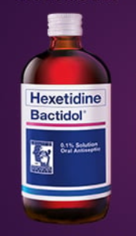

Medicine Guide For Sore Throats

BACTIDOL
Description
Hexetidine (Bactidol) 0.1% Solution is indicated for its antibacterial and antifungal action in the following circumstances: Minor oropharyngeal infections and inflammatory conditions including candidiasis. As an aid in the prevention and treatment of gingivitis.Guide
Gargle 2x a day for 24 hr protection.
BACTIDOL
Description
Sore throat is one of the most common complaints brought to the attention of otolaryngologists. It may be symptomatic of a variety of illnesses, which is why the treatment must be matched to the individual.Taking Lozenges is a convenient, affordable option for symptomatic treatment of acute and chronic pharyngitis, irritation or inflammation of the upper respiratory tract and relief of unpleasant postoperative sensation in the throat.
Bactidol Extra Soothing Lozenges provides flavorful and convenient relief from sore throat. Comes in Orange and Honey Lemon Flavor. Available in packs of 8 and 16 Lozenges.
Guide
1 lozenge every 2-3 hours with a maximum daily dose of 8 lozenges.
BACTIDOL
Description
Itchy or Dry Cough can be caused by the inflammation of your throat and upper airways, which results in a tickling sensation.This type of cough comes with little to no phlegm or mucus. Sometimes, you also develop sore throat due to frequent coughing.
Guide
Adult and children older than 12 years:10 mL (2 teaspoons) every 4 hours. Don't exceed 6 doses in a day.
Children aged 6 to less then 12 years:
5 mL (1 teaspoon) every 4 hours. Don't exceed 6 doses in a day.

BACTIDOL
Guide
Adult and Children older than 12 years:10-15 mL (2-3 teaspoon) every 6 hours. Do not exceed 60 mL per day.
Children aged 6 to 12 years:
5-10 mL (1-2 teaspoon) every 6 hours. Do not exceed 30 mL per day.

STREPSILS
Description
Strepsils Original lozenges provide fast, soothing and effective relief from the discomfort of sore throats. Each lozenge contains a combination of antibacterials to help kill the bacteria which can cause sore throat and mouth infections.Guide
The recommended dose is Adults, Children (over 6 years) and the elderly – One lozenge to be dissolved slowly in the mouth every 2-3 hours up to a maximum of 12 lozenges in 24 hours. It is not recommended that children under 6 use this product. Remember that young children can choke on lozenges.BETADINE
Description
For fast and soothing relief of sore throat. For the treatment of acute mucosal infections of the mouth and pharynx including stomatitis, gingivitis, aphthous ulcers, pharyngitis, tonsillitis, monilial infections, common colds and influenza. Convenient, handy and easy to use. For children 6 years old and above.Guide
One spray to the throat area, up to 3 times per day. Spit out excess liquid. Rinsing is not necessary. Supervise use with children.
DEQUADIAN
Description
Dequadin® Medicated Throat Lozenges contains dequalinium chloride, an antibacterial and antifungal medicine. It can help relieve sore throats and infections, such as a common strep infection or thrush caused by frequent use of an inhaler.Guide
For adults and children 6 years and older: Dissolve one lozenge in the mouth slowly. Repeat every two hours as needed.DIFFLAM
Description
Difflam Lozenges with active ingredient Benzydamine HCl relieve pain due to sore throat, tonsillitis and other inflammatory conditions in the mouth and throat. Benzydamine HCl reduces pain and swelling with Anti-Inflammatory, Analgesic and (local) Anaesthetic benefits.Guide
Age: Adults and children aged 6 years & overDosage:
Above 12 years old: 15ml to be gargled for at least 30 sec every 1.5-3 hours.